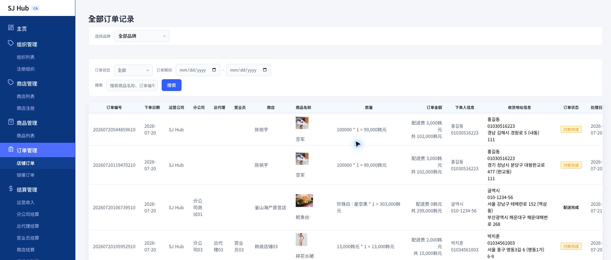
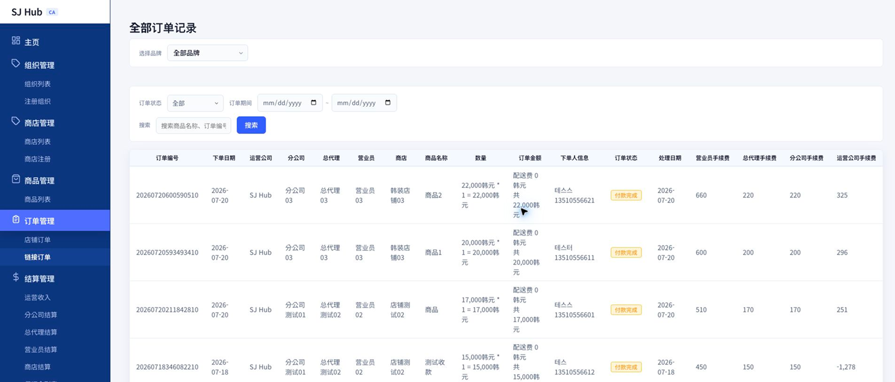

CHAPTER 5
주문관리
점포주문 · 링크주문 조회 및 상태 관리
점포주문
링크주문
주문 상태값
1
점포주문 화면 (店铺订单)
고객이 상점 페이지에서 직접 주문한 건을 조회합니다. 4단계 수수료 배분까지 한 행에서 확인할 수 있습니다.

1
2
3
사용 방법
1
필터로 주문 찾기
브랜드(상점), 주문상태, 주문기간, 검색어(상품명·주문번호·구매자명)로 좁혀봅니다.
2
주문상태 직접 변경
"주문상태" 칸을 누르면 상태를 바로 바꿀 수 있는 선택창이 열립니다. 상태값 전체 목록은 옆 탭 "주문 상태값"을 참고하세요.
3
배송지 수정
"배송지정보" 칸도 버튼으로 되어 있어, 눌러서 배송지를 바로 수정할 수 있습니다.
💡 각 주문 행 끝의 총괄대리점/유통업체/운영사 수수료 3개 칼럼은
정산관리
챕터 서두의 정산 공식대로 계산된 값입니다.
1
링크주문 화면 (链接订单)
셀러가 공유한 상품 링크(
상품관리
의 "링크 복사")를 통해 발생한 주문을 조회합니다.

1
2
사용 방법
1
점포주문과 화면 제목이 같다는 점 유의
두 화면 모두 제목이 "全部订单记录"로 똑같이 나오므로, 반드시
사이드바 메뉴명(店铺订单/链接订单)
으로 구분하세요.
2
점포주문과 다른 칼럼 확인
배송지정보 칼럼이 없고, 상품 이미지 없이 상품명 텍스트만 표시됩니다. 나머지 필터·칼럼·조작 방법은 점포주문과 동일합니다.
1
주문 상태값 전체 목록
점포주문·링크주문 두 화면에 공통으로 쓰이는 상태값입니다.
한국어
중文
결제완료
付款完成
주문취소
订单取消
취소처리중
取消处理中
취소완료
取消完成
상품준비중
商品准备中
배송중
配送中
배송완료
配送完成
이전 챕터
4. 상품관리
CHAPTER 5 / 8
다음 챕터
6. 정산관리
→